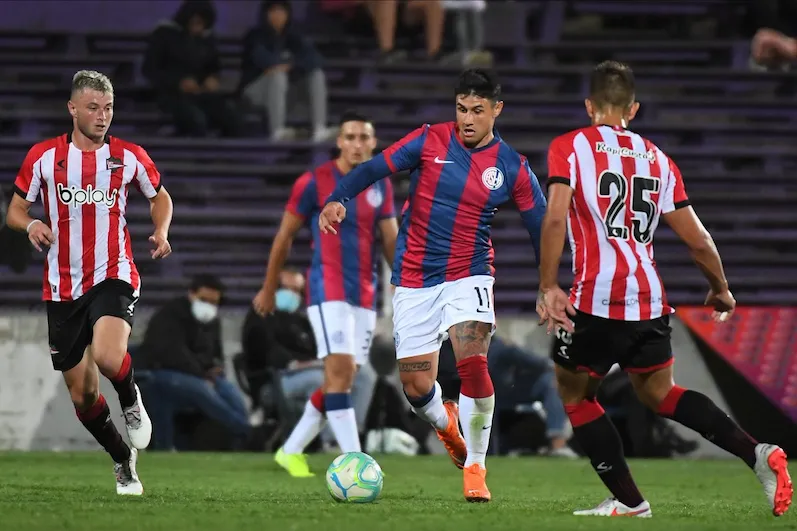

SE SUSPENDEN LAS ELECCIONES EN SAN LORENZO
Los socios de San Lorenzo se preparaban para elegir un nuevo presidente en las elecciones de este sábado 17 de diciembre. Sin embargo, a poco más de 24 horas para que inicien los comicios llegó una mala noticia: se suspendieron. La Inspección General de Justicia (IGJ) comunicó que no avala el llamado a elección anticipadamente ya que oficialmente el club no se encuentra acéfalo, tras una denuncia del Roberto Gagliardone, que integra la lista de Cipriano Pommies.
Se esperaba mas de 10 mil socios

AMISTOSOS CONFIRMADOS
La pretemporada de San Lorenzo se puso en marcha. Con el retorno de los jugadores a Ciudad Deportiva junto al cuerpo técnico comandado por Ruben Darío Insua, el Ciclón volvió nuevamente al trabajo con miras a este 2023. Con el fin de ponerse a punto de cara al comienzo de la Liga Profesional, el equipo estará viajando a Uruguay para continuar con sus tareas y disputar una serie de partidos amistosos. Los mismos serán tres encuentros correspondientes a la Serie Río de la Plata, se estarán disputando todos en el plazo de siete días y serán televisados por ESPN Premium.
El goleador renovó por 3 años más

SIN REFUERZOS A LA VISTA
San Lorenzo se prepara para afrontar lo que será el torneo de campeones del 2023, en donde el Ciclón afrontará 4 competiciones, entre ellas estan los dos torneos y copas locales, Copa Argentina que disputará su primer partido en febrero y la Copa Sudamericana, la cual conquistó en el año 2002 de la mano de su actual entrenador Ruben Dario Insúa. Pero para ello, todavia no se asoma ningún refuerzo para afrontar dichas competiciones.
Rubén esperando los refuerzos